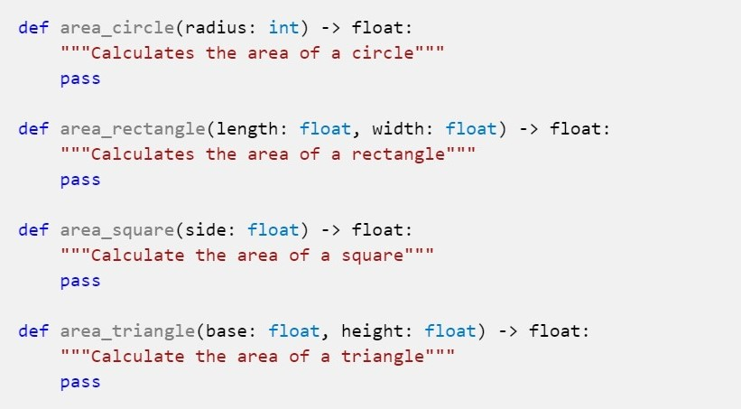

Area Calculator¶
Write a program to calculate the area of four different geometric shapes: triangles, squares, rectangles, and circles. You must use functions. Here are the functions you should create:

Name your file area_calculator.py
Your program should present a menu for the human to choose which shape to calculate, then ask them for the appropriate values (length, width, radius, etc.). Then it should pass those values to the appropriate function and display the resulting area.
Notice that you must not input the values inside
the functions, and you must not display the values inside
the functions. All input and output must be in the
main() function, and values must be passed to the functions
and returned from them.
You will need to construct your own main function and use the magical if __name__ == "__main__": statement as seen in previous assignments.
| shape | formula |
|---|---|
| square | A = s² |
| rectangle | A = l × w |
| triangle | A = ½bh |
| circle | A = πr² |
You’ll need the value of π for area_circle(); feel
free to use the math library’s pi variable.
import math
math.pi # 3.141592653589793
The menu should keep looping until the human chooses to quit.
Shape Area Calculator version 0.1 (c) 2005 Mitchell Sample Output, Inc.
-=-=-=-=-=-=-=-=-=-=-=-=-=-=-
1) Triangle
2) Rectangle
3) Square
4) Circle
5) Quit
Which shape: 1
Base: 5
Height: 6
The area is 15.
-=-=-=-=-=-=-=-=-=-=-=-=-=-=-
1) Triangle
2) Rectangle
3) Square
4) Circle
5) Quit
Which shape: 2
Length: 10
Width: 4
The area is 40.
-=-=-=-=-=-=-=-=-=-=-=-=-=-=-
1) Triangle
2) Rectangle
3) Square
4) Circle
5) Quit
Which shape: 3
Side length: 9
The area is 81.
-=-=-=-=-=-=-=-=-=-=-=-=-=-=-
1) Triangle
2) Rectangle
3) Square
4) Circle
5) Quit
Which shape: 4
Radius: 4
The area is 50.2655.
-=-=-=-=-=-=-=-=-=-=-=-=-=-=-
1) Triangle
2) Rectangle
3) Square
4) Circle
5) Quit
Which shape: 5
Goodbye.
©2021 Daniel Gallo
This assignment is licensed under a Creative Commons Attribution-NonCommercial-ShareAlike 3.0 United States License.

Adapted for Python from Graham Mitchell’s Programming By Doing